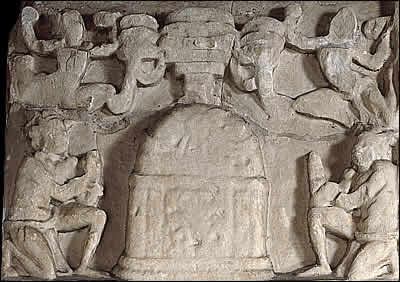

Death of the Buddha
After many years of teaching, the Buddha died at the age of 80. His body was cremated and his ashes were divided into eight parts. The ashes were then deposited in several special mound-shaped monuments called 'stupas'. This scene shows a stupa as a symbol of the Buddha's death. On each side of the stupa there are people holding up their hands in gestures of worship. |